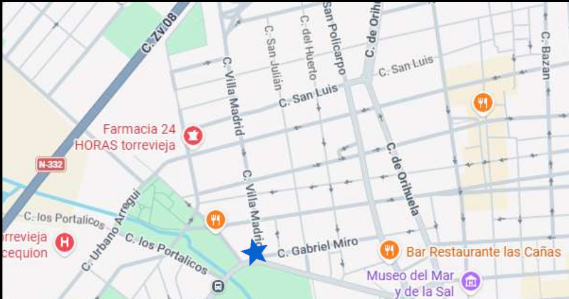

Providers of safety and style
Our well established company was born in 1991 out of a desire of protecting and preventing the neighbours of Torrevieja. Our outmost goal is to make our city a safe place for residents and visitors. Therefore, we put quality and warranty as our most cared values.
At our company, we believe that the things that protect your home may also make it look better. We design and supply high-quality metal products for homes and businesses, including fences, window grilles, and doors, all built to last. Every piece is crafted from tough steel, aluminum, or wrought iron and finished with rust-resistant coatings, so it holds up through years of weather with very little upkeep.
Our range covers everything from clean, modern lines to classic ornamental designs, and we can custom-make products to fit your exact measurements and style. Whether you need stronger security, a smarter way to define your property, or a front door that makes a statement, our team is here to guide you from the first idea through to installation.
96 571 1789Opening hours
Monday-friday
09:00 - 20:00
Saturday-sunday
Closed
Everyday, 24 hours a day
Available via phone
You can find us here:

c/Villa Madrid 3, Torrevieja